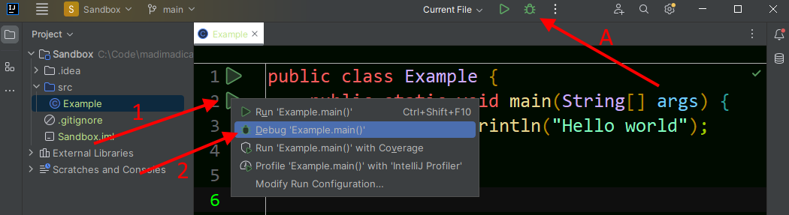
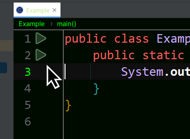
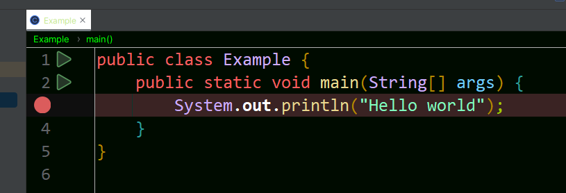
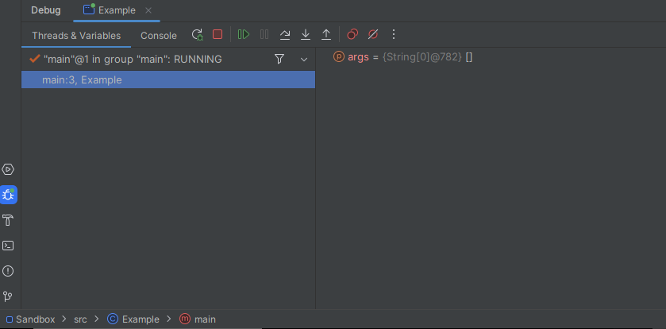
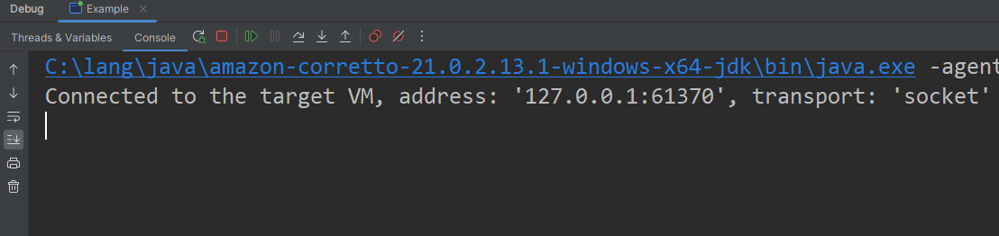
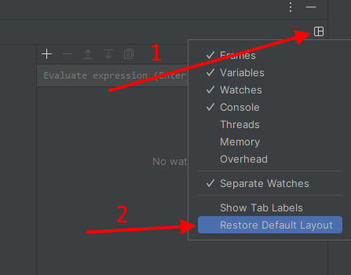
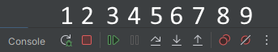
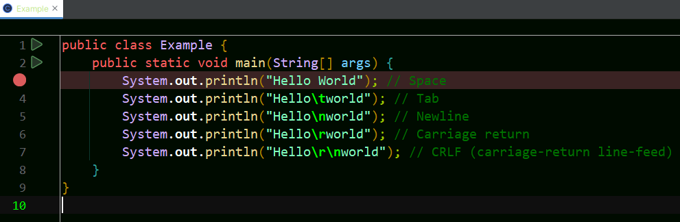

2.6 - Errors
Nobody is perfect and errors will inevitably occur. There are a couple different ways errors can appear, and some ways to prevent them. Errors are a natural part of programming, and if you haven't experienced any, you will. But don't feel bad, making mistakes and correcting them is a big part of the learning process. Don't immediately give up and search the internet or ask an AI for help, you'd only be taking the learning experience away from yourself. When you identify and correct a mistake, you are much less likely to make it again.
Compile-Time Errors
Compile-time errors are the best. Why? Because it happened very early into development and can quickly be identified and fixed. There are several ways compile-time errors can occur, and all of them should contain an informative error message explaining what went wrong and where.
A syntax-error is an error in how the language is used. It
could be a missing semicolon. It could be you used single-quotes instead
of double-quotes in 'hello world'. Maybe you
didn't use any quotes and tried to call
System.out.println(hello world);. The compiler doesn't
know what you're trying to do.
Another type of compile-time error is a missing symbol. Maybe you tried
to call System.out.printLine(), but
printLine() cannot be found. In this case, the compiler
knows that you are trying to invoke a method, but it does not exist
where you said it did. Similarly, you could be trying to use a variable
that doesn't exist. For example, you tried to print
total, but the variable was actually named
sum.
One really important compile-time error is when you have a type-error.
Since Java is a strongly typed language, all types need to be
compatible. As you continue learning, this will make more sense. But if
you tried to store "hello world" (a text String)
in an int (a number), these would be incompatible types.
With a compile-time error, your program never even gets the chance to run. You must fix the compilation errors and try [to compile] again.
IDEs like IntelliJ can detect any compile-time errors before you try to run the program. There will be a strong visual cue, such as a red-squiggly line under the error. This allows you to quickly spot and correct errors. If I were to forget a semicolon, I can immediately notice the red-squiggly and add one. If it's something more than a missing semicolon, you might have to hover over it and see the error message tooltip. As you begin to identify and correct these errors, you will quickly reinforce your brain and know what error you made without looking at the message.
Runtime Errors
Runtime-errors are almost the worst. They are more generally called bugs. Unlike compile-time errors, there is nothing stopping you compiling and running a program that can produce a runtime error. You will only find it after the program runs into the error (hence, runtime). Examples include a missing file, a network connection issue, or the dreaded null-pointer exception (NPE). Unhandled errors will cause your program to immediately terminate - there is no recovering (unless is gets handled).
One example we can see right now would be with
System.out.println(1 / 0);. This produces a division by
zero error. For obvious errors like this, IntelliJ will give you warning
about them (usually with a yellow-squiggly).
Other errors, such as a missing file, are likely enough that the programmer is forced to handle them in some way. Most runtime errors are like this, as the others are much more preventable (such as not dividing by zero, but you can't guarantee the internet is connected). We will learn more about runtime errors (Exceptions), and ways to handle them, in %chapter #%.
Logic Errors
Logic errors do not cause compilation or fatal runtime errors, but cause incorrect outputs. This is the category where most bugs live. They cause issues with the program, but it continues executing. Two of the most common logic errors are off-by-one errors.
Suppose you were supposed to sort usernames in alphabetical order
(case-insensitive), but you accidentally sorted it with
case-sensitivity. Everything compiled and executed fine on your first
try: Bravo, Charlie, Delta. Then, the next day you load the
results and see Bravo, Charlie, Delta, alpha. Now you
notice that there is a bug using case-sensitivity. Some people may
(jokingly) call this a feature, but in our example it is
definitely a bug. And we didn't even know about it until the dataset
changed and we happened to look at it again. How many other bugs are
still hiding?
This is why I would consider logic errors to be the worst. At least with a runtime error you know something went wrong, and approximately where. But, with a logic error, you need to use your best judgement and intuition to find the root-cause. Sometimes you might get lucky and find it within a few minutes, but other times it might take hours or days. Sometimes finding the bug is the easy part, but fixing it is hard part.
An example program containing a logic error is given below. The intended
output was 2 + 2 = 4, but instead the program prints
2 + 2 = 22. While we haven't formally covered String
concatenation (+), this error is caused by an order of
operations issue. One fix would be adding parentheses around
(2 + 2).
public class LogicError { public static void main(String[] args) { /* * Expected output: 2 + 2 = 4 * Actual output: 2 + 2 = 22 */ System.out.println("2 + 2 = " + 2 + 2); } }
Fortunately, not all hope is lost. Someday you will learn how to test your code (automatically). While creating tests does not guarantee that the code is error-free, it can significantly reduce the surface area for problems. In our initial example, maybe you (or a teammate) recognized the edge case of uppercase/lowercase usernames, and added specific testing for it. Testing is an important part of software development, and identifying edge cases is an important part of testing.
Reading Error Messages
Seeing a big red error message can be scary, but many times it tells you almost exactly what went wrong. Some of the error information is not very important at this point, but will become more relevant when we have larger programs with multiple classes and methods.
Compilation Error Message
When you have a compilation error, it tells you a lot of information
such as the line number and column number. In the example where we try
to run System.out.printLine("hello world");, we
receive this compilation error message:
C:\Code\sandbox\src\Main.java:6:19 java: cannot find symbol symbol: method printLine(java.lang.String) location: variable out of type java.io.PrintStream
From this error message we can see
- File name
Main.java - In directory
C:\Code\sandbox\src\ :6:19: Line6, Column19- Cannot find symbol
method printLine() - variable type
java.io.PrintStream
As our earlier example showed, printLine() is not a method
(specifically within type java.io.PrintStream, but we will
ignore this for now), it should have been println().
IntelliJ should also jump to the file that caused the compilation error
and put your caret (cursor) at the error position.
Runtime Error Message
Runtime error messages are an exception stack trace. This allows you to
see where the unhandled error was thrown, and what methods led to it.
For now, that will usually just be the main method. Later
we will have multiple methods in the stack trace.
Using the example code System.out.println(1 / 0);, we can
see this error message:
Exception in thread "main" java.lang.ArithmeticException: / by zero at Main.main(Main.java:6)
This says:
-
Happened on the
mainthread (will be this way for a long time) - Exception
java.lang.ArithmeticException - Message:
/ by zero -
At class
Main, methodmain, corresponding to fileMain.javaline6
Right now, we really only care about the message
/ by zero and the position
Main.main(Main.java:6). In IntelliJ, we can click the
Main.java:6 to jump to line 6 of Main.java, where we see
the printing of 1 / 0.
Debugging
Debugging is a process that allows you to step through the source code and view the state of the program changing at the same time. IDEs like IntelliJ and Eclipse support debugging out of the box. Editors like VSCode do not provide as rich of an experience and also need to rely on plugins/extensions.
Debug Mode (IntelliJ)
In IntelliJ, debugging can be launched by clicking the bug icon next to
the top-right play button. Alternatively, debug mode can be launched by
clicking the play button in the gutter and selecting
Debug 'FILENAME.main()'. The following image
illustrates their locations. Follow step A to directly
launch a debug configuration (Note in the example,
Current File is selected. You may need to change this).
Steps 1 and 2 show an alternative route, which
may need to be used once before the configuration in Step-A updates.

When you run the following code in debug mode, other than some extra output such as:
Connected to the target VM, address: '127.0.0.1:60561', transport: 'socket' <Your print statements> Disconnected from the target VM, address: '127.0.0.1:60561', transport: 'socket'
This is IntelliJ connecting/disconnecting from the local (127.0.0.1) debugger. These lines can be ignored, and only show up in debug mode. You might be wondering what the point of this is, since nothing else seems different. The debugger doesn't change the execution of the program, but it can pause it. We just haven't told it where.
Breakpoints
In order to tell the debugger to pause, we need to set a breakpoint. To do this in IntelliJ (and most editors), click in the left gutter of the source code on the line you want to pause at (or on the line number). You can add as many breakpoints as you want. Click the gutter again to remove a breakpoint.

Then the code where the breakpoint is set will appear highlighted (your editor colors may vary):

Now when you click Debug, you should see something like
this:

or

If you don't see either of those, you can restore the default layout by clicking these
buttons:

In this view, we can see the Threads & Variables and
Console tabs. There are also a lot of control buttons:

- Rerun: Stop and Restart the program
- Stop: Stop the program
- Resume: Resume execution
- Pause: Pause the program wherever it is, regardless of breakpoints.
- Step over: Execute the current line of code.
- Step into: Step into a method's code.
- Step out: Resume execution and pause at the caller's next line.
- View Breakpoints: Edit current breakpoint settings
- Mute Breakpoints: Ignore/disable all breakpoints
Buttons 6 and 7 are useful for debugging
methods, which we haven't learned to write yet.
Using the breakpoint we set on our println, click button
5, step over. This will execute the line, printing
"Hello world" to console. But we are still paused since we are
now at the end of main. Stepping-over once more will finish
executing the example program.
Practice Exercise
Consider our example program from the whitespace section:
public static void main(String[] args) { System.out.println("Hello World"); // Space System.out.println("Hello\tWorld"); // Tab System.out.println("Hello\nWorld"); // Newline System.out.println("Hello\rWorld"); // Carriage Return System.out.println("Hello\r\nWorld"); // CRLF (carriage-return line-feed) }
Rather than commenting off different lines, insert a breakpoint on the first print, and step-over each line to see what it prints. Your debug breakpoint should look like this (you only need one):

As you step over each line, view the output associated with that
statement.
As another good exercise, step through this code and watch the output:
public static void main(String[] args) { System.out.print("Hello"); System.out.print("\r"); System.out.print("World"); }